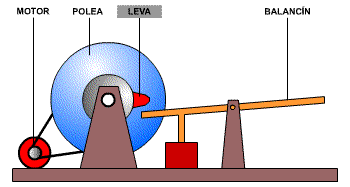

Operadores eléctricos son dispositivos utilizados en sistemas eléctricos para controlar y manipular la corriente eléctrica. Estos operadores pueden ser tanto manuales como automáticos, y desempeñan un papel fundamental en el funcionamiento seguro y eficiente de los sistemas eléctricos.
Existen diferentes tipos de operadores eléctricos, cada uno diseñado para cumplir una función específica. A continuación, se describen algunos de los operadores eléctricos más comunes:
1. Interruptores: Los interruptores son dispositivos que permiten abrir o cerrar un circuito eléctrico. Estos pueden ser interruptores manuales, como los interruptores de luz en una casa, o interruptores automáticos, como los disyuntores utilizados en los paneles de distribución eléctrica. Los interruptores son esenciales para controlar el flujo de corriente y proteger los equipos y circuitos contra sobrecargas y cortocircuitos.
2. Relés: Los relés son dispositivos electromagnéticos que permiten controlar circuitos de alta potencia utilizando señales de baja potencia. Funcionan como interruptores controlados por una señal externa, como un sensor o un temporizador. Los relés son ampliamente utilizados en aplicaciones industriales y domésticas para controlar motores, luces, electrodomésticos y otros dispositivos eléctricos.
3. Contactores: Los contactores son similares a los relés, pero están diseñados para manejar corrientes más altas y cargas más pesadas. Se utilizan principalmente en aplicaciones industriales para controlar motores de gran potencia, compresores y otros equipos eléctricos de alta carga. Los contactores pueden ser controlados manualmente o automáticamente, y son esenciales para garantizar un funcionamiento seguro y confiable de los sistemas eléctricos industriales.
4. Arrancadores de motor: Los arrancadores de motor son dispositivos utilizados para iniciar y controlar el funcionamiento de motores eléctricos. Estos dispositivos proporcionan la corriente necesaria para arrancar el motor y luego reducen la corriente a un nivel de funcionamiento normal. Los arrancadores de motor pueden ser arrancadores directos, arrancadores estrella-triángulo o arrancadores suaves, dependiendo de las características del motor y los requisitos de arranque.
5. Variadores de velocidad: Los variadores de velocidad, también conocidos como inversores de frecuencia o drives, son dispositivos utilizados para controlar la velocidad y el par de motores eléctricos. Estos dispositivos permiten ajustar la velocidad del motor según las necesidades específicas de una aplicación, lo que puede resultar en ahorros significativos de energía y una mayor eficiencia operativa. Los variadores de velocidad se utilizan en una amplia gama de aplicaciones industriales, desde sistemas de bombeo y ventilación hasta maquinaria pesada.
Estos son solo algunos ejemplos de operadores eléctricos comunes. Existen muchos otros tipos y variantes disponibles en el mercado, cada uno diseñado para cumplir con requisitos específicos en diferentes aplicaciones.
En resumen, los operadores eléctricos desempeñan un papel crucial en el control y manipulación segura de la corriente eléctrica en sistemas eléctricos. Desde interruptores y relés hasta contactores, arrancadores de motor y variadores de velocidad, estos dispositivos permiten controlar y proteger los equipos eléctricos, así como ajustar la velocidad y el par de los motores según las necesidades específicas de una aplicación.
1. Corriente continua (CC): La corriente continua es un flujo constante de carga eléctrica en una dirección. En este tipo de corriente, los electrones se desplazan en una sola dirección desde el polo negativo al polo positivo de una fuente de alimentación, como una batería o una celda solar. La corriente continua se utiliza comúnmente en dispositivos electrónicos portátiles, automóviles y sistemas de energía solar.
2. Corriente alterna (CA): La corriente alterna es un tipo de corriente eléctrica en la que la dirección del flujo de carga se invierte periódicamente. En un sistema de corriente alterna, los electrones oscilan hacia adelante y hacia atrás a una frecuencia determinada. La corriente alterna es la forma más común de suministro de energía eléctrica en hogares y edificios comerciales. Se genera en centrales eléctricas y se distribuye a través de redes de transmisión y distribución.
3. Corriente pulsante: La corriente pulsante es un tipo especial de corriente que varía su intensidad o polaridad en intervalos regulares. Este tipo de corriente se utiliza en aplicaciones específicas, como la estimulación muscular en fisioterapia o la soldadura por puntos en la industria automotriz.
Estructuras algorítmicas, también conocidas como estructuras de control, son bloques de código que permiten controlar el flujo de ejecución de un programa. Estas estructuras son fundamentales en la programación, ya que permiten tomar decisiones, repetir tareas y organizar el código de manera lógica y eficiente.
Existen tres estructuras algorítmicas principales: secuencia, selección e iteración.
La estructura de secuencia es la más básica y se refiere a la ejecución lineal de instrucciones en un programa. Las instrucciones se ejecutan una tras otra, en el orden en que aparecen en el código. No hay toma de decisiones ni repetición de tareas en esta estructura.
La estructura de selección permite tomar decisiones en función de una condición. Se evalúa una expresión o condición y, dependiendo del resultado, se ejecuta un bloque de código u otro. La estructura más común para la selección es el "if-else", donde se ejecuta un bloque de código si la condición es verdadera y otro bloque si la condición es falsa. También existen variantes como el "switch-case" que permite seleccionar entre múltiples opciones.
Estructuras repetitivas, también conocidas como bucles o ciclos, son construcciones en programación que permiten ejecutar un bloque de código varias veces. Estas estructuras son fundamentales para automatizar tareas repetitivas y mejorar la eficiencia de los programas.
Existen tres tipos principales de estructuras repetitivas: el bucle for, el bucle while y el bucle do-while. Cada uno de estos bucles tiene su propia sintaxis y se utiliza en diferentes situaciones.
El bucle for es utilizado cuando se conoce de antemano la cantidad exacta de veces que se debe repetir un bloque de código. La sintaxis básica del bucle for es la siguiente: